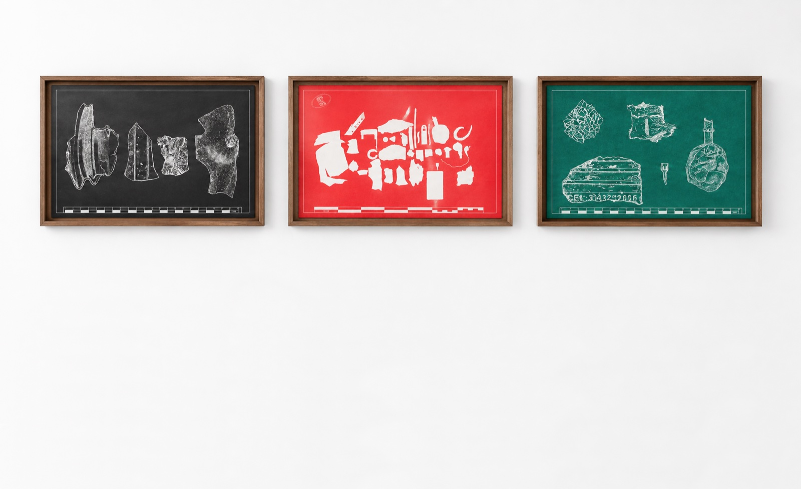
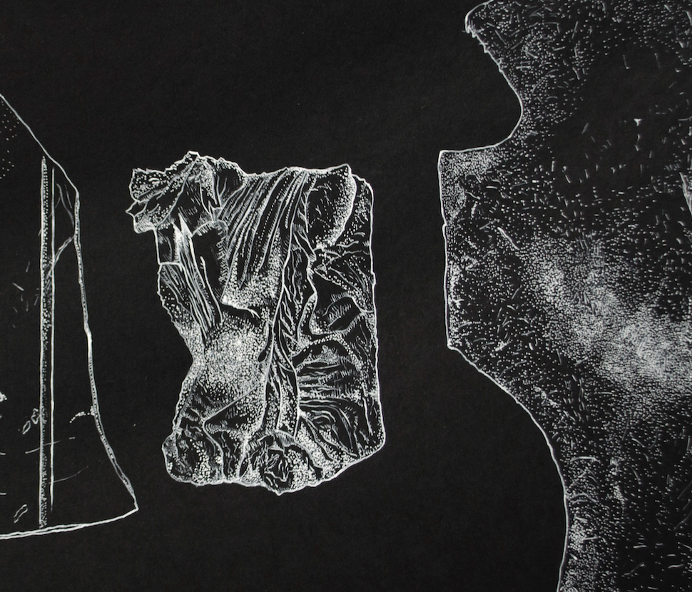
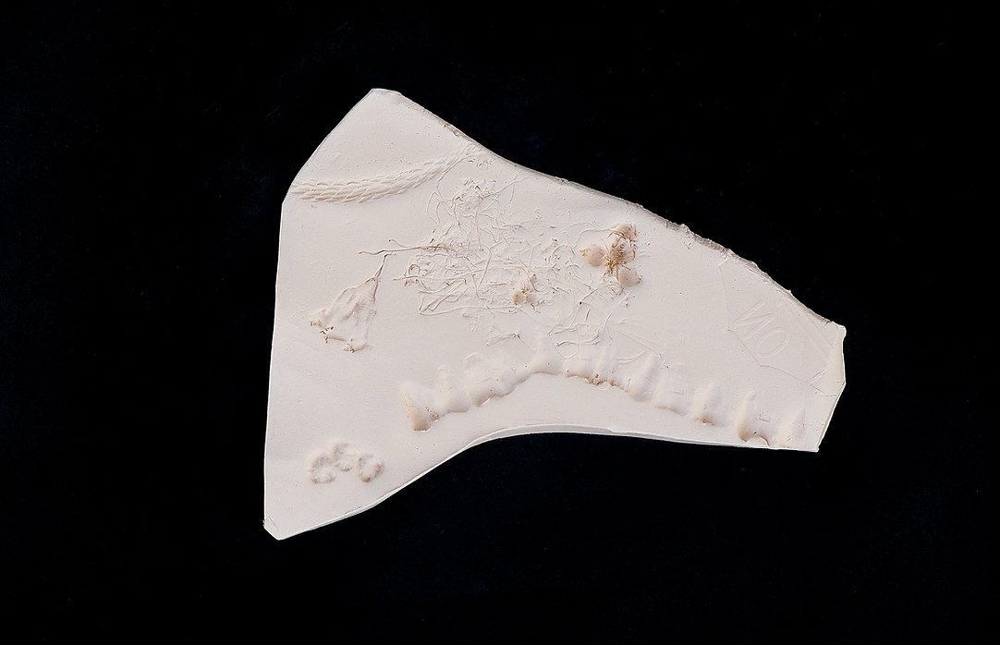
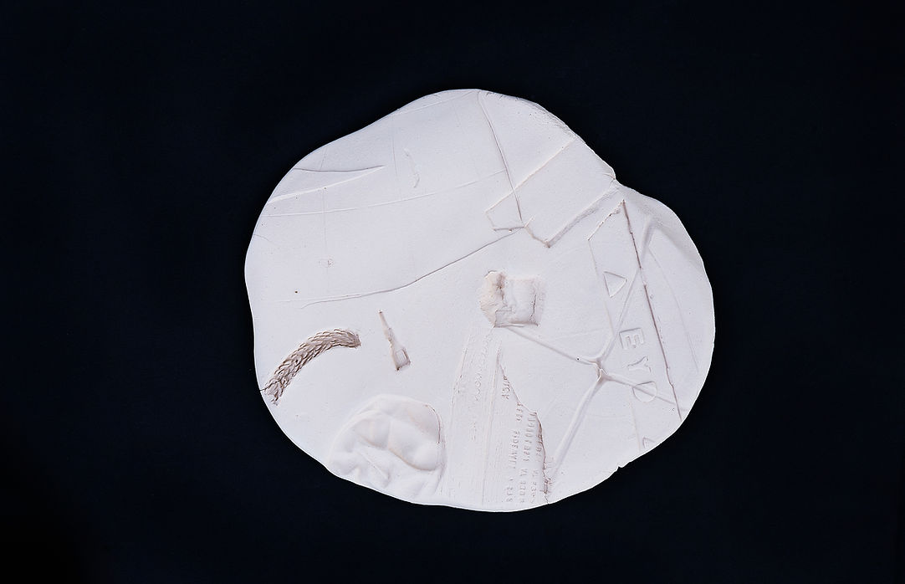
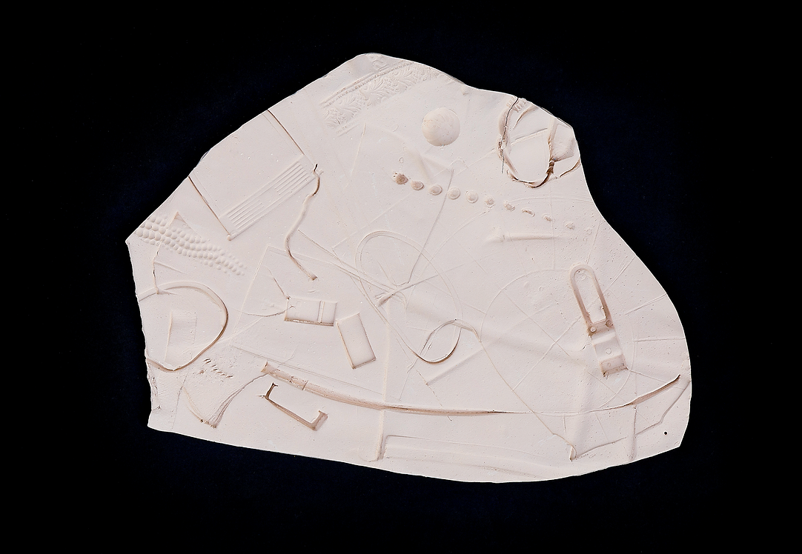

nada de lo que se mide es basura
Edición 2020
Feria Barcú - Bogotá. Sección Spotlights.
Este proyecto explora los códigos y medidas estándares utilizados en los registros arqueológicos, creando una narrativa a partir de la pregunta sobre qué merece ser estudiado y medido, generando así posibilidades en torno a intereses subjetivos.
Durante un mes, recorrí los alrededores del barrio La Esmeralda, Bogotá, lugar donde vivía en ese momento, encontrando fragmentos de caucho, plástico, partes de accesorios y acrílicos. Estos objetos tenían una historia directamente relacionada con el sector, lo que impulsó la intención de crear una serie de dibujos donde pude experimentar a través de los códigos arqueológicos al diseñar plantillas y dibujar sobre ellas. Este ejercicio lleva a pensar que lo que se mide y registra posee un valor material y arqueológico.
En la serie "Contacto", piezas que realicé con arcilla, la utilicé como matriz para aplicar presión, plasmando en ella las características, texturas, relieves y contornos de estos objetos que forman parte de un todo que ya no existe.

“Nada de lo que se mide es basura”. Serie de tres dibujos. Impresión digital y tinta blanca sobre papel. 50×35 cms c/u. 2020.

Detalle. Sin título. 48×33 cms. Impresión digital y tinta blanca sobre papel. 50×35 cms. 2020.

“Contacto”. Cerámica. Dimensiones variables. 2020.

“Contacto”. Cerámica. Dimensiones variables. 2020.

“Contacto”. Cerámica. Dimensiones variables. 2020.